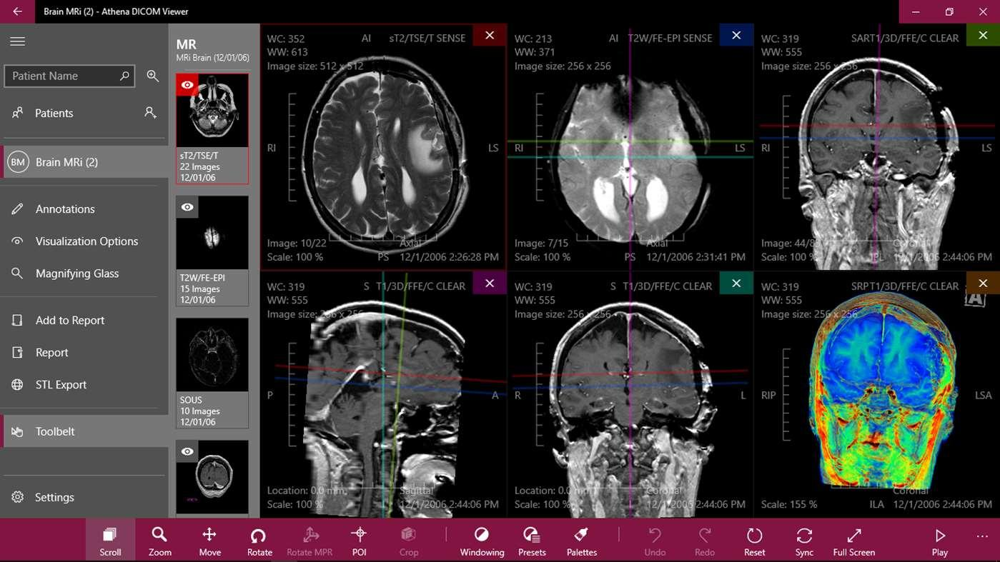

DICOM - Digital Imaging and Communications in Medicine
DICOM (Digital Imaging and Communications in Medicine) is a standard protocol used in medical imaging for the exchange, storage, and retrieval of medical images and related information.
DICOM Structure
DICOM is composed of two main parts: a header and a data section. The header contains metadata about the image, such as patient information, image acquisition parameters, and image orientation. The data section contains the actual image data.
DICOM Header
The DICOM header contains a series of DICOM Data Elements (DDEs) that provide information about the image. Some of the most important DDEs include:
- Patient Name: the name of the patient associated with the image
- Patient ID: a unique identifier for the patient
- Study Description: a brief description of the study or examination
- Series Description: a brief description of the series to which the image belongs
- Modality: the imaging modality used to acquire the image (e.g., CT, MRI, X-ray)
- Image Position (Patient): the position of the image relative to the patient
- Image Orientation (Patient): the orientation of the image relative to the patient
- Pixel Spacing: the physical distance between each pixel in the image
- Bits Allocated: the number of bits allocated for each pixel
- Photometric Interpretation: the color space used to represent the image
<
DICOM Data Elements
DICOM Data Elements (DDEs) are the basic building blocks of DICOM. Each DDE consists of a tag, a value representation (VR), and a value. The tag is a unique identifier that specifies the meaning of the DDE. The VR specifies the data type and format of the value, and the value itself contains the actual data.
There are several types of DDEs, including:
- Unique Identifier (UID): used to identify DICOM objects and other DICOM-related information
- Numeric (N): used to represent numerical values
- Date (DA): used to represent dates
- Time (TM): used to represent times
- String (ST): used to represent short text strings
- Long String (LO): used to represent longer text strings
- Sequence (SQ): used to represent a sequence of related DDEs

Uses of DICOM
DICOM is used in a wide variety of medical imaging applications, including:
- Radiography (X-ray)
- Computed tomography (CT)
- Magnetic resonance imaging (MRI)
- Ultrasound imaging
- Nuclear medicine imaging
DICOM is also used for sharing medical images and related information between different healthcare providers, such as hospitals, clinics, and diagnostic imaging centers. This allows for more efficient and accurate diagnoses and treatment plans.